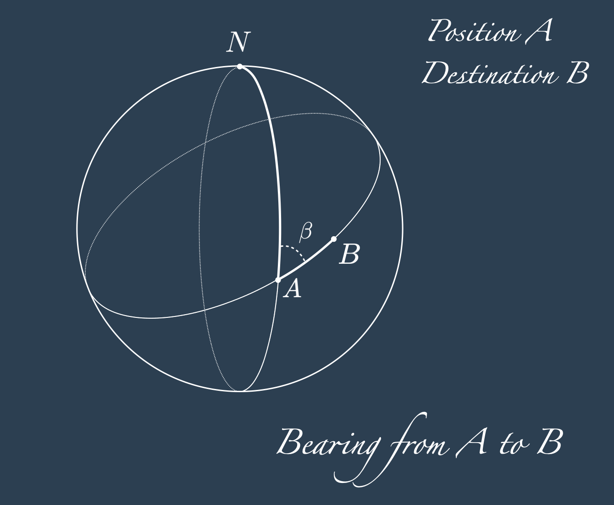
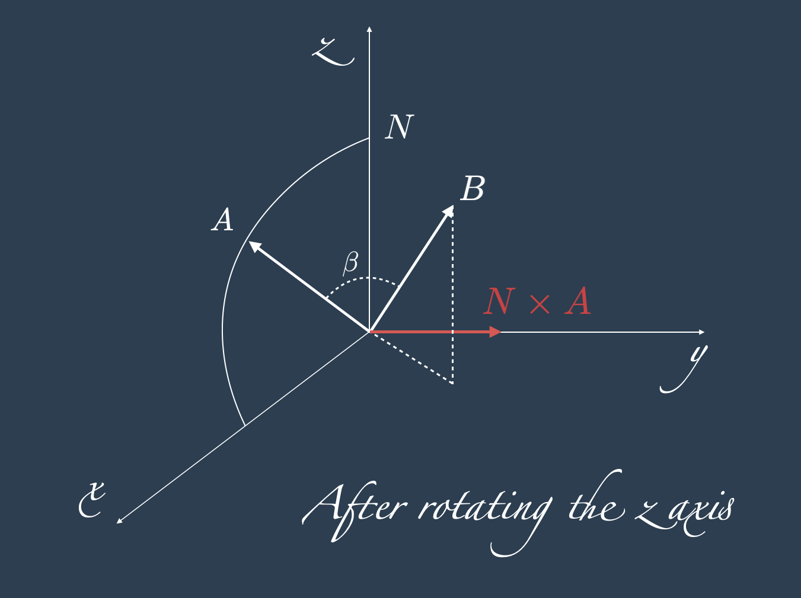
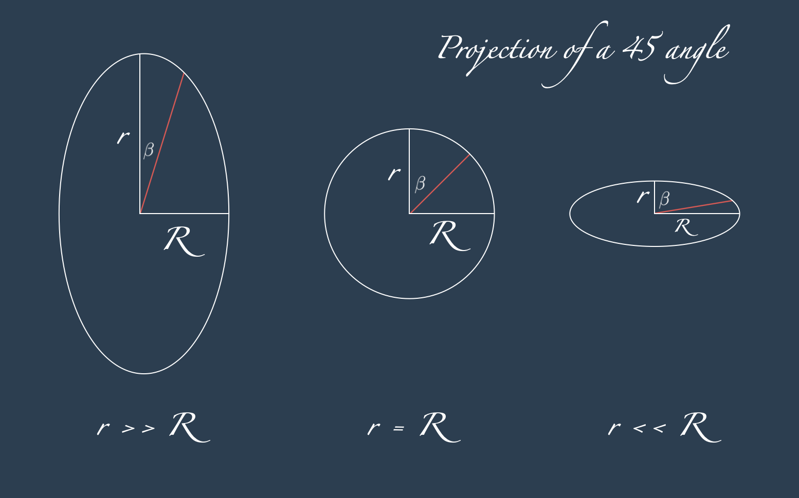

import numpy as np
def bearing(
lon_A: float,
lat_A: float,
lon_B: float,
lat_B: float,
) -> float:
"""
Angle between geodesic connecting point 1 to point 2, and point 1 and north pole.
Input latitude and longitude expected in degrees.
Result in degrees between 0 to 360.
"""
if np.nan in [lon_A, lat_A, lon_B, lat_B]:
return np.nan
theta_A, phi_A, theta_B, phi_B = map(np.radians, [lon_A, lat_A, lon_B, lat_B])
y = np.cos(phi_B) * np.sin(theta_B - theta_A)
x = np.cos(phi_A) * np.sin(phi_B) - np.sin(phi_A) * np.cos(phi_B) * np.cos(theta_B - theta_A)
return (np.rad2deg(np.arctan2(y, x)) + 360) % 360
def bearing_ellipsoid(
lon_A: float,
lat_A: float,
lon_B: float,
lat_B: float,
polar_radius_km: float = 6357.0,
equatorial_radius_km: float = 6378.0,
) -> float:
"""
Angle between geodesic connecting point 1 to point 2, and point 1 and north pole.
Default to WGS84 ellipsoid model.
Input latitude and longitude expected in degrees.
Result in degrees between 0 to 360.
"""
if np.nan in [lon_A, lat_A, lon_B, lat_B]:
return np.nan
theta_A, phi_A, theta_B, phi_B = map(np.radians, [lon_A, lat_A, lon_B, lat_B])
R, r = equatorial_radius_km, polar_radius_km
y = np.sqrt(
(R * r * np.sin(phi_A) * np.cos(phi_B) * np.sin(theta_B - theta_A)) ** 2
+ (R**2 * np.cos(phi_A) * np.cos(phi_B) * np.sin(theta_B - theta_A)) ** 2
)
x = -(R**2) * np.cos(phi_B) * np.sin(phi_A) * np.cos(theta_B - theta_A) + r * R * np.cos(phi_A) * np.sin(phi_B)
sigma = +1
if (lon_B - lon_A) % 360 > 180:
sigma = -1
return (np.rad2deg(sigma * np.arctan2(y, x)) + 360) % 360
def _lon_lat_to_3d(
lon: float,
lat: float,
polar_radius_km: float = 6357.0,
equatorial_radius_km: float = 6378.0,
):
"""aux function to compute projections"""
theta, phi = map(np.radians, [lon, lat])
R, r = equatorial_radius_km, polar_radius_km
return np.array([R * np.cos(phi) * np.cos(theta), R * np.cos(phi) * np.sin(theta), r * np.sin(phi)])
def bearing_ellipsoid_cos(
lon_A: float,
lat_A: float,
lon_B: float,
lat_B: float,
polar_radius_km: float = 6357.0,
equatorial_radius_km: float = 6378.0,
):
"""
Angle between geodesic connecting point 1 to point 2, and point 1 and north pole.
Default to WGS84 ellipsoid model.
Input latitude and longitude expected in degrees.
Result in degrees between 0 to 360.
Alternative method based on inverting the cosine, and using the vector projection with normalization
and vector product of numpy.
"""
lon_B = lon_B - lon_A
lon_A = 0
N = np.array([0, 0, 1])
A = _lon_lat_to_3d(lon_A, lat_A, polar_radius_km, equatorial_radius_km)
B = _lon_lat_to_3d(lon_B, lat_B, polar_radius_km, equatorial_radius_km)
n_N_A, n_B_A = np.cross(N, A), np.cross(B, A)
n_N_A = n_N_A / np.linalg.norm(n_N_A)
n_B_A = n_B_A / np.linalg.norm(n_B_A)
sigma = +1
if (lon_B - lon_A) % 360 > 180:
sigma = -1
return (np.rad2deg(sigma * np.arccos(np.dot(n_N_A, n_B_A))) + 360) % 360Introduction
This post is not about how to stand the part of physics where experiments are cheap1.
Today’s topic is the solution of a recurring problem in geospatial data science, that frequently arises when dealing with Automatic Identification System data, and more in general when having to do with distances and angles on the surface of a sphere.
Considered along with the Haversine distance, the bearing at the point \(A\) in the direction of another point \(B\) is the angle \(\beta\) between the meridian passing through \(A\) and the geodesic connecting \(A\) to \(B\).
For maritime applications, the bearing of a vessel is the angle between the meridian and the direction where the vessel is intending to go, measured from zero to \(360\) degrees clockwise.
It is not the same as the heading, that is the angle between the meridian and the actual vessel orientation; heading and bearing may or may not be coincident, depending on the navigation conditions such as water currents, winds and the consequent route adjustments.
In the first and second parts of this blog post you will find the mathematical derivation of the bearing formula for the sphere and the ellipsoid model respectively. If you are here for the python code, you can skip directly to the third part.
Bearings for the Earth’s spherical model
This is the notation we are using for latitude and longitude in degrees and radians:
\[ \begin{align*} \theta &:= \text{rad}(\text{Lon}) \\ \varphi &:= \text{rad}(\text{Lat}) \\ \end{align*} \]
To project a point \((\theta, \varphi)\) with \(\theta \in [-\pi, \pi]\) and \(\varphi \in [-\pi/2, \pi/2]\), on the sphere of radius \(R\) we use the immersion:
\[ \iota: \mathbb{S}^2 \rightarrow \mathbb{R}^3 \]
\[ \iota(\theta, \varphi) = \begin{cases} x = R \cos\varphi \cos\theta\\ y = R \cos\varphi \sin\theta\\ z = R \sin\varphi\\ \end{cases} \]
that is a spherical coordinate system with North pole corresponding to \(90\) degrees latitude and the South pole to \(-90\) degrees latitude, also presented in our previous post about the Haversine distance.

Given two points on the sphere, a position \(A = (\theta_A, \varphi_A)\) and a destination \(B = (\theta_B, \varphi_B)\), the bearing \(\beta\) from \(A\) to \(B\) is the angle between
- the plane passing through \(A\), the north pole \(N\) and the origin \(O\), indicated with \(\pi(OAN)\),
- and the plane \(A\), \(B\) and \(O\), indicated with \(\pi(OAB)\).
The angle between two plane coincides with the angle between their two normals, that can be computed with the exterior products2:
\[ ~\text{ Vector } \perp \text{ to } \pi(OAN) \text{ is } \hat{n}_N^A = \frac{N\times A}{ \left\Vert N\times A \right\Vert } \\ ~ \\ ~\text{ Vector } \perp \text{ to } \pi(OAB) \text{ is } \hat{n}_B^A = \frac{B\times A}{ \left\Vert B\times A \right\Vert } \\ \]
Therefore the bearing is the angle between \(\hat{n}_N^A\) and \(\hat{n}_B^A\), and can be computed leveraging on the scalar product definition:
\[ \hat{n}_B^A \cdot \hat{n}_N^A = \left\Vert \hat{n}_B^A \right\Vert \left\Vert \hat{n}_N^A \right\Vert \cos \beta \]
resulting in \(\cos(\beta) = \hat{n}_B^A \cdot \hat{n}_N^A\), as the vectors are already normalized.
At this point, inverting the cosine would give the answer.
But this not yet the end of the blog post. The cosine is invertible only between \(0\) and \(\pi\), so we need some more digging, as the proposed solution would work only for the bearings pointing eastwards. An option to solve the problem and to finish here the blog post is to add a sign based on the cardinal direction.

There is a better strategy: starting with the observation that \(\beta\) is invariant under the rotations around the \(z\) axis, we can rotate the sphere to make \(\tilde{\theta}_A = 0\) and \(\tilde{\theta}_B = \theta_B - \theta_A\). In this reference \(N \times A\) is parallel to the \(y\) axis, and \(\beta\) becomes the angle between \(\hat{n}_B^A\) and the \(y\)-axis.
Moreover, the cosine of \(\beta\) is the projection of \(\hat{n}_B^A\) on the \(y\) axis, which is its \(y\)-component, and the sine of \(\beta\) is the projection of \(\hat{n}_B^A\) on the plane \(xz\), that is the square root of the sum of squared \(x\) and \(z\) components of \(\hat{n}_B^A\).
In formula, for \(B\times A = ((B\times A)_x, (B\times A)_y, (B\times A)_z )\):
\[ \tan\beta = \frac{\sin\beta}{\cos\beta} = \frac{\sqrt{ (B\times A)_x^2 + (B\times A)_z^2 }}{ (B\times A)_y^2} \]
Now remains to compute \(B\times A\) in the rotated coordinate system, and to invert the tangent, that does not have the issue we had when inverting the cosine.
The 3 points \(N, A, B\) before re-orienting the axis are:
\[ \begin{align*} N &= (0,0,1) \\ A &= (R\cos\varphi_A\cos\theta_A, R\cos\varphi_A\sin\theta_A, R\sin\varphi_A) \\ B &= (R\cos\varphi_B\cos\theta_B, R\cos\varphi_B\sin\theta_B, R\sin\varphi_B) \end{align*} \]
After the re-orientation \(\theta_A = 0\) and \(\tilde{\theta}_B = \theta_B - \theta_A\) they become:
\[ \begin{align*} N &= (0,0,1) \\ A &= (R\cos\varphi_A, 0, R\sin\varphi_A) \\ B &= (R\cos\varphi_B\cos\tilde{\theta}_B, R\cos\varphi_B\sin\tilde{\theta}_B, R\sin\varphi_B) \end{align*} \]
With elementary computations based on: \[ \begin{align*} N \times A = &(0, R\cos\varphi_A, 0) \\ B\times A = &( R^2 \sin\varphi_A \cos\varphi_B \sin\tilde{\theta}_B, R^2 \cos\varphi_A \sin\varphi_B - \sin\varphi_A \cos\varphi_B \cos\tilde{\theta}_B, - R^2 \cos\varphi_A\cos\varphi_B \sin\tilde{\theta}_B ) \\ \end{align*} \]
it follows: \[ \begin{align*} \tan\beta &= \frac{\sqrt{ (B\times A)_x^2 + (B\times A)_z^2 }}{ (B\times A)_y^2} \\ &= \frac{ \sqrt{ \cos^2\varphi_B \sin^2\tilde{\theta}_B ( \sin^2\varphi_A + \cos^2\varphi_A) } }{\cos\varphi_A \sin\varphi_B - \sin\varphi_A \cos\varphi_B \cos\tilde{\theta}_B} \\ &= \frac{\cos\varphi_B \sin\tilde{\theta}_B }{\cos\varphi_A \sin\varphi_B - \sin\varphi_A \cos\varphi_B \cos\tilde{\theta}_B} \end{align*} \]
Applying the arc-tangent to both members of the previous expressions, we finally get to the solution to the problem of computing the bearing:
\[ \beta(A, B) = \text{atan2} ( Y, X ) \]
where
\[ \begin{align*} Y &:= \cos\varphi_B \sin(\theta_B - \theta_A) \\ X &:= \cos\varphi_A \sin\varphi_B - \sin\varphi_A \cos\varphi_B \cos(\theta_B - \theta_A) \\ \end{align*} \]
and where \(\text{atan2}(y, x)\) is the arctangent of \(y/x\), evaluated for any \(x\) and \(y\) as
\[ \text{atan2}(y, x) = \begin{cases} \arctan(y/x) \phantom{+ \pi} \qquad x>0, ~~\forall y \\ \arctan(y/x) + \pi \qquad x<0, ~~ y \geq 0 \\ \arctan(y/x) - \pi \qquad x<0, ~~ y < 0 \\ +\frac{\pi}{2} \phantom{\arctan(y/x)} \qquad x = 0, ~~ y > 0 \\ -\frac{\pi}{2} \phantom{\arctan(y/x)} \qquad x = 0, ~~ y < 0 \\ \text{undefined} \qquad \qquad x = 0, ~~ y = 0 \\ \end{cases} \]
Bearings for the Earth’s ellipsoid model
Here we compute the Bearing on the ellipsoid. In analogy with the Haversine distance formula on the sphere, that becomes the Vincentry’s distance formula when computed on the ellipsoid, we may call this formulation the Vincentry's bearing3.
The projection from the sphere to to the ellipsoid immersed in the 3D space that we use here is:
\[ \iota_e: \mathbb{S}^2 \rightarrow \mathbb{R}^3 \]
\[ \iota_e(\theta, \varphi) = \begin{cases} x = R \cos\varphi \cos\theta\\ y = R \cos\varphi \sin\theta\\ z = r \sin\varphi\\ \end{cases} \]
where to \(R=6378~\text{Km}\) corresponds the lengths of the semi-axes parallel to the \(x\) and \(y\) coordinates, and \(r=6357~\text{Km}\) is the length of the semi-axis parallel to the \(z\) axis. Following the same reasoning and re-orientation of the previous section we have:
\[ \begin{align*} N &= (0,0,1) \\ A &= (R\cos\varphi_A, 0, r\sin\varphi_A) \\ B &= (R\cos\varphi_B\cos\tilde{\theta}_B, R\cos\varphi_B\sin\tilde{\theta}_B, r\sin\varphi_B) \end{align*} \]
\[ \begin{align*} B\times A = &( r R \sin\varphi_A \cos\varphi_B \sin\tilde{\theta}_B, r R \cos\varphi_A \sin\varphi_B - r R \sin\varphi_A \cos\varphi_B \cos\tilde{\theta}_B, - R^2 \cos\varphi_A\cos\varphi_B \sin\tilde{\theta}_B ) \\ \end{align*} \]
\[ \begin{align*} \tan\beta_e &= \frac{\sqrt{ (B\times A)_x^2 + (B\times A)_z^2 }}{ (B\times A)_y^2} \\ &= \frac{ \sqrt{ R^2 r^2 \sin^2\varphi_A \cos^2\varphi_B \sin^2\tilde{\theta}_B + R^4 \cos^2\varphi_A \cos^2\varphi_B \sin^2\tilde{\theta}_B } }{ R r(\cos\varphi_A \sin\varphi_B - \sin\varphi_A \cos\varphi_B \cos\tilde{\theta}_B ) } \end{align*} \]
As a consequence, the bearing on the ellipsoid \(\beta_e\) between the points \(A\) and \(B\) can be computed with:
\[ \beta_e(A, B) = \text{atan2} ( Y, X ) \]
where
\[ \begin{align*} Y &:= \sqrt{ R^2 r^2 \sin^2\varphi_A \cos^2\varphi_B \sin^2\tilde{\theta}_B + R^2 \cos^2\varphi_A \cos^2\varphi_B \sin^2\tilde{\theta}_B } \\ X &:= R r(\cos\varphi_A \sin\varphi_B - \sin\varphi_A \cos\varphi_B \cos\tilde{\theta}_B ) \\ \end{align*} \]
Now wait! Looking back at the definition of \(\text{atan2}(y, x)\), and at the fact that \(Y\) is always positive (unlike on the sphere were it was possible to get rid of the square root), we can see that we have the same issue we had when inverting the cosine in the previous section. The formula would work only for the angles pointing eastwards, as the angle would fold back between \([0, \pi]\) for all the angles pointing westwards.
To solve the problem in this direction, we must add a multiplicative sign factor \(\sigma\) that is positive if \((\text{Lon}_B - \text{Lon}_A) ~ \text{mod} ~ 360 \leq 180\), and negative otherwise.
\[ \beta_e(A, B) = \sigma ~\text{atan2} ( Y, X ) \]
where
\[ \sigma = \begin{cases} +1 \qquad (\text{Lon}_B - \text{Lon}_A) ~ \text{mod} ~ 360 \le 180 \\ -1 \qquad (\text{Lon}_B - \text{Lon}_A) ~ \text{mod} ~ 360 > 180 \\ \end{cases} \]
Even with this extra sing, I personally prefer to rely on the arcotangent instead of directly inverting the cosine in the scalar product formula, due to the complications arising normalising the vectors involved (in particular in normalising \(B \times A\) after the axis rotation).
Nonetheless, computing the bearing as
\[ \beta = \sigma \arccos\left( \frac{ \hat{n}_B^A \cdot \hat{n}_N^A } { \left\Vert \hat{n}_B^A \right\Vert \left\Vert \hat{n}_N^A \right\Vert } \right) \]
remains a very valid option and a simple approach relying on the help of a numeric library.
Crossing the anti-meridian
The attentive reader may have noticed4 that for the formula based on the cosine there is no \(z\)-axis rotation bringing \(A\) on the zero meridian. This rotation is still advisable in the practical implementations, to avoid the points crossing the anti-meridian.
Python code
Run with python 3.12 with only numpy>=2.1.0 installed. Most likely backward compatible with any previous version as based only on basic numpy functions.
The two functions are tested on a grid of points centered on the null island, and distributed clockwise for intervals of 45 degrees angles.
With this experiment we can see the different formulas at work, and how the bearing changes in accordance with changing \(r\). An angle that would be close to 45 degrees in the spherical model (point \(B_2\), \(r = R\)) would shrink on an elongated spherical model (point \(B_1\), \(r >> R\)), and would become close to 90 degrees on a flattened model (point \(B_3\), \(r << R\)). We also compare the cosine formula and the ellipsoid formula with WGS84 parameters.

def get_list_lon_lat_45(radius: float = 1.0) -> list[float]:
"""Dataset constructor, clockwise from lon,lat=0,1. Radius in degrees."""
cos, sin = np.sqrt(2) / 2, np.sqrt(2) / 2
return [
[0.0, radius],
[radius * cos, radius * sin],
[radius * radius, 0.0],
[radius * cos, -radius * sin],
[0.0, -radius * radius],
[-radius * cos, -radius * sin],
[-radius * radius, 0.0],
[-radius * cos, radius * sin],
]
expected_angles_deg = 45 * np.arange(0, 8, dtype=float)
lon_A, lat_A = 0.0, 0.0
for radius in [1, 2, 3, 4, 20]:
for expected_bearing, (lon_B, lat_B) in zip(expected_angles_deg, get_list_lon_lat_45(radius)):
computed_bearing = bearing(lon_A, lat_A, lon_B, lat_B)
computed_bearing_b1 = bearing_ellipsoid(
lon_A, lat_A, lon_B, lat_B, polar_radius_km=20_000, equatorial_radius_km=6378
)
computed_bearing_b2 = bearing_ellipsoid(
lon_A, lat_A, lon_B, lat_B, polar_radius_km=6378, equatorial_radius_km=6378
)
computed_bearing_b3 = bearing_ellipsoid(
lon_A, lat_A, lon_B, lat_B, polar_radius_km=20, equatorial_radius_km=6378
)
computed_bearing_standard = bearing_ellipsoid(lon_A, lat_A, lon_B, lat_B)
computed_bearing_standard_cos = bearing_ellipsoid_cos(lon_A, lat_A, lon_B, lat_B)
# replace with `if True:`, to see all results
if radius == 20 and expected_bearing in [0.0, 45.0, 315.0]:
print("--------------")
print(f"on the plane = {expected_bearing}")
print(f"on the sphere = {computed_bearing}")
print(f"comp. elli. B1 = {computed_bearing_b1}")
print(f"comp. elli. B2 = {computed_bearing_b2}")
print(f"comp. elli. B3 = {computed_bearing_b3}")
print(f"comp. elli. = {computed_bearing_standard}")
print(f"comp. cos. = {computed_bearing_standard_cos}")
print()--------------
on the plane = 0.0
on the sphere = 0.0
comp. elli. B1 = 0.0
comp. elli. B2 = 0.0
comp. elli. B3 = 0.0
comp. elli. = 0.0
comp. cos. = 0.0
--------------
on the plane = 45.0
on the sphere = 44.11846688848101
comp. elli. B1 = 17.18343754925604
comp. elli. B2 = 44.11846688848101
comp. elli. B3 = 89.81471830327064
comp. elli. = 44.212907540129606
comp. cos. = 44.212907540129606
--------------
on the plane = 315.0
on the sphere = 315.881533111519
comp. elli. B1 = 342.81656245074396
comp. elli. B2 = 315.881533111519
comp. elli. B3 = 270.18528169672936
comp. elli. = 315.7870924598704
comp. cos. = 315.7870924598704
Footnotes
V. Arnold’s letter describing a very common definition of mathematics.↩︎
consider \(A\times N\) and \(A\times B\) leads to identical results.↩︎
I could not find this formula on the web or on any other resources. It may not have been considered worth writing about, probably because it is a very simple variation of the algebraic manipulations proposed in the previous section. Or maybe because of its ugliness.↩︎
This expression is lend from proper maths textbooks, and in this post it is written with an optimistic spirit in believing to have any reader at all.↩︎